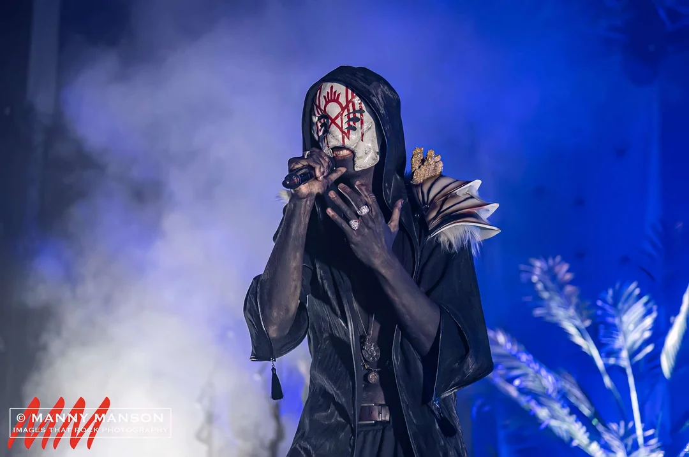
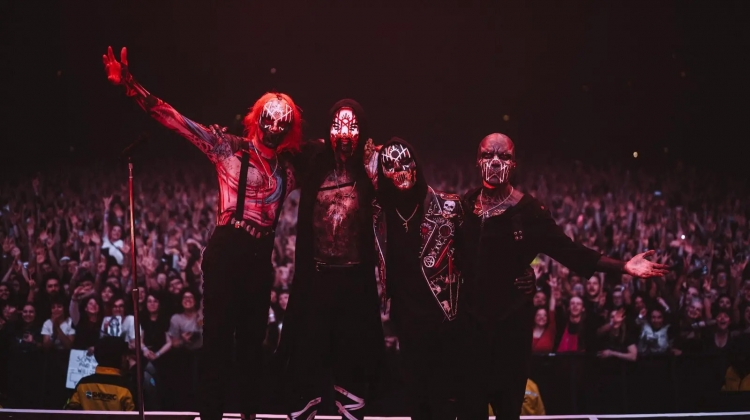

News
Recital Red Rock - Morrison 2024
On May 12, Sleep Token will deliver an exclusive performance at Red Rocks Amphitheater in Morrison, CO. They also announced a sold-out show at Radio City Music Hall on May 22 and a performance at OVO Wembley Arena on December 16. Those interested can register here for a unique access code, with a pre-sale on December 13 and regular sale on December 11. The band recently released their third album, Take Me Back To Eden, and completed a sold-out North American tour.
Viser - St Louis Event
This week St. Louis sees a stop from the legendary NYC experimental rock act Swans, who will bring an apocalyptic cacophony of hypnotically delivered nihilism and complex soundscapes to Delmar Hall on Friday. Elsewhere, Atlanta's Mariah the Scientist comes through to the Pageant on Tuesday, fresh off last week's arrest in which she is accused of attacking a woman at a nightclub. (Gonna need that show money for lawyer fees, lest she end up joining her boyfriend Young Thug in the clink.) Meanwhile, Yonder Mountain String Band is set for a two-night stand at Off Broadway on Friday and Saturday, TikTok sensation Thomas Day tops a free pre-game block party at Citypark, while Boston's Fleshwater hits the Duck Room on Wednesday to gaze at some shoes. All this and a Star Wars-themed metal band (that would be Galactic Empire, playing Off Broadway Saturday with Bit Brigade) in our picks for this week's best shows!
Vore - Nuevo Sigle
Luego de sorprendernos a principios de 2023 con un conjunto de nuevas canciones, el colectivo anónimo de metal enmascarado Sleep Token anunció finalmente la llegada de un nuevo álbum de estudio. Con el nombre de Take Me Back To Eden, el disco será la continuación del aclamado álbum This Place Will Become Your Tomb de 2021 y del debut de 2019, Sundowning. Sin ser suficiente, la banda estrenó un nuevo sigle «Vore».